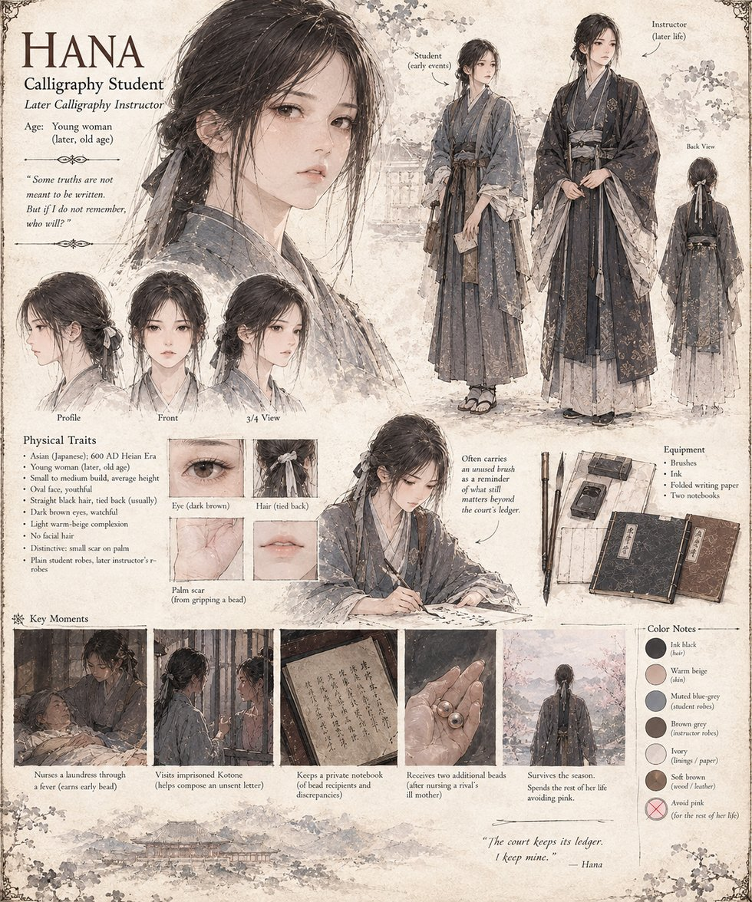

Hana
Calligraphy Student, later Instructor
A calligraphy student who nurses a laundress through a fever for her first bead, and is later trusted enough to help a young, imprisoned Kotone compose a letter that never gets sent. Where the court keeps one ledger of rank, Hana quietly keeps a second: her own private notebook of who received a bead, for what, and where the official account doesn't add up. She survives the season, goes on to teach calligraphy herself in later life, and spends the rest of it avoiding the color pink. “The court keeps its ledger,” she says of it, decades on. “I keep mine.”
“Some truths are not meant to be written. But if I do not remember, who will?”
Appears in The Ledger of a Single Sweetness